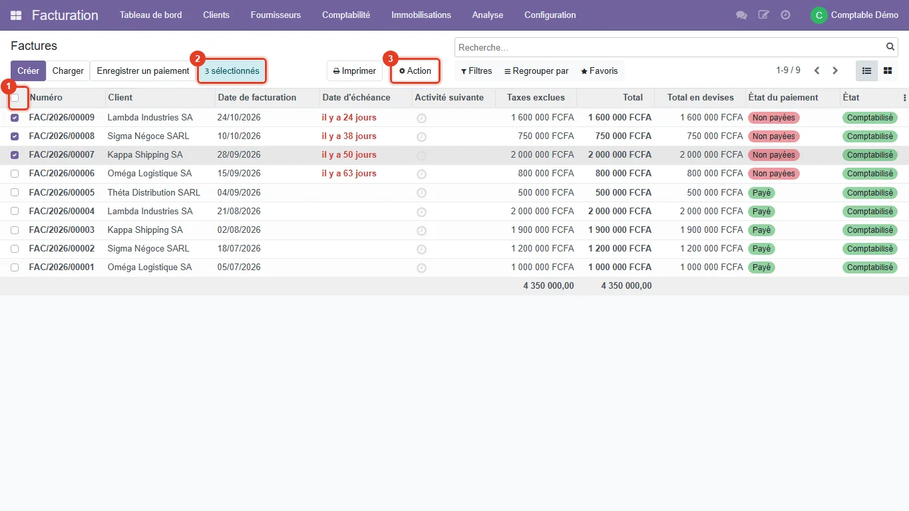

Objectif. Traiter un lot de lignes : exporter, imprimer, archiver.
Où dans Odoo 15Liste concernée › cases à cocher › Action

Ce que vous faites
- Cochez les lignes une à une, ou la case de l'en-tête (1) pour toute la page.
- Le nombre de lignes sélectionnées s'affiche (2) ; cliquez dessus pour sélectionner toutes les lignes, pas seulement la page.
- Ouvrez Action (3) : Exporter, Archiver, Supprimer, ou une action propre à la liste.
À vérifier avant de continuer
0 / 1À éviter.
- Vérifiez les filtres actifs avant de tout sélectionner : l'action porte sur toutes les lignes retenues.
Exercice sur la base de test
Sélectionnez les trois dernières factures clients et ouvrez le menu Action sans rien valider.